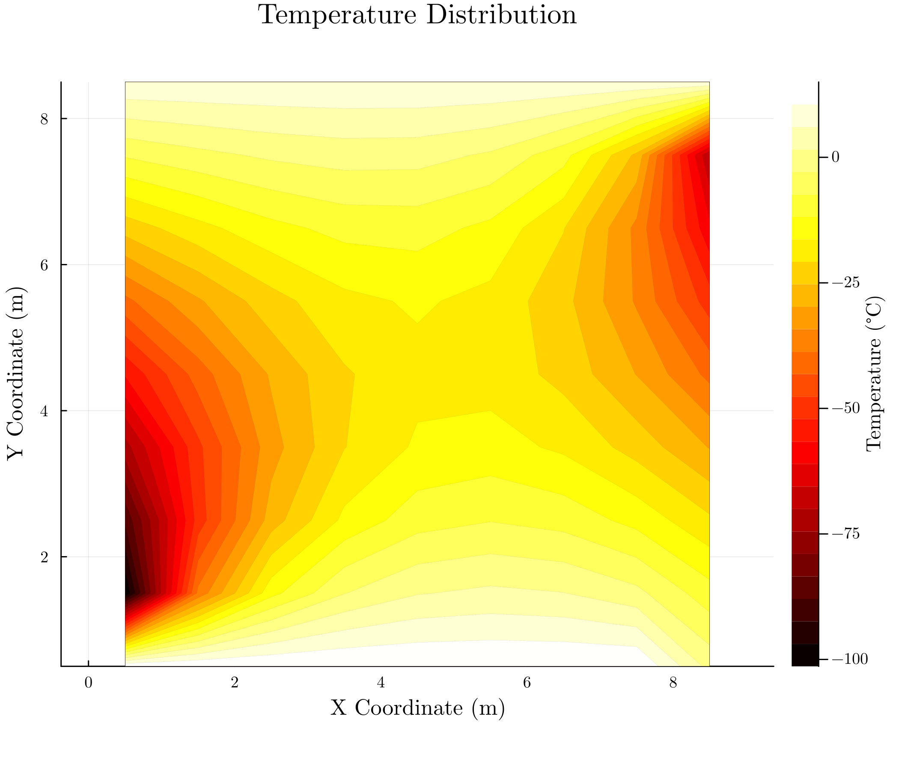
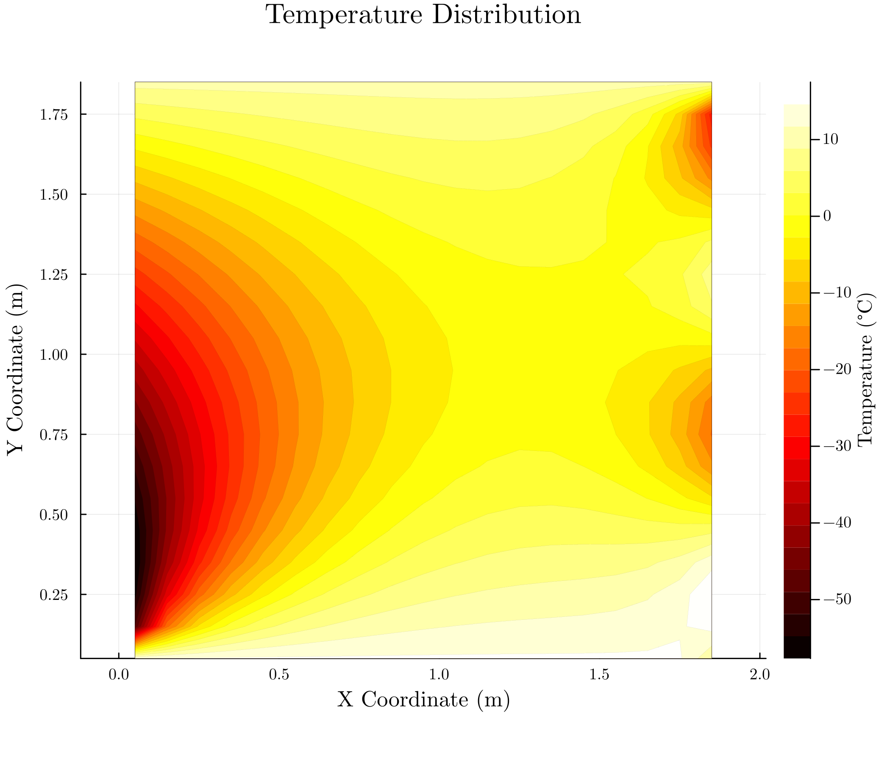
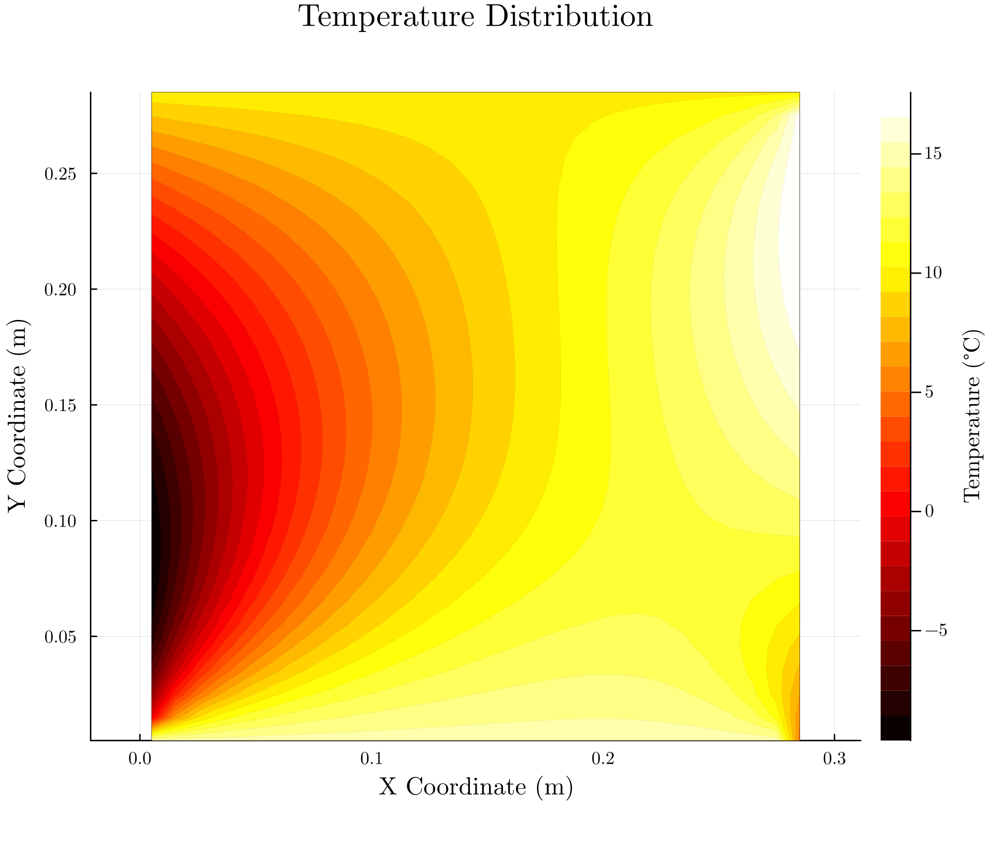
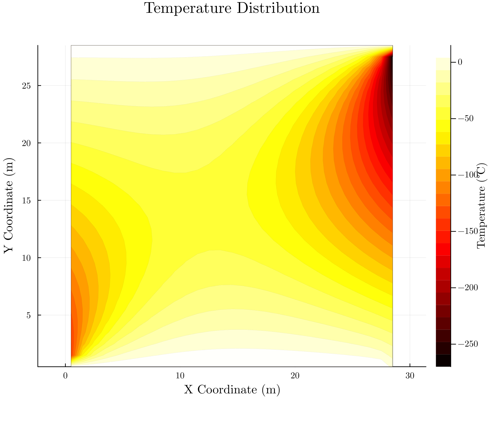
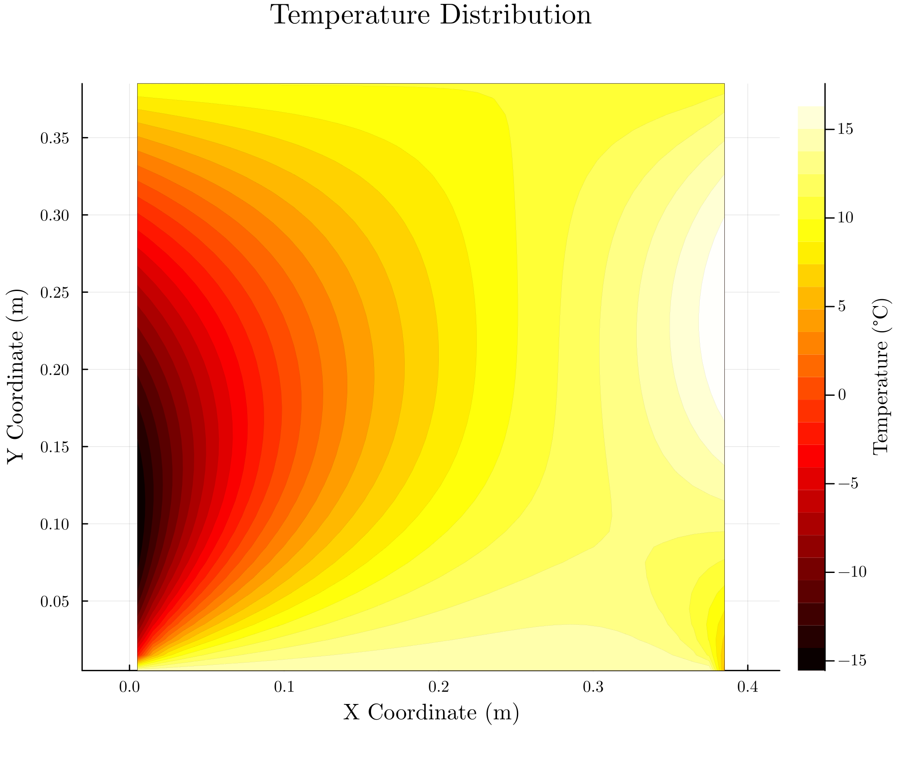
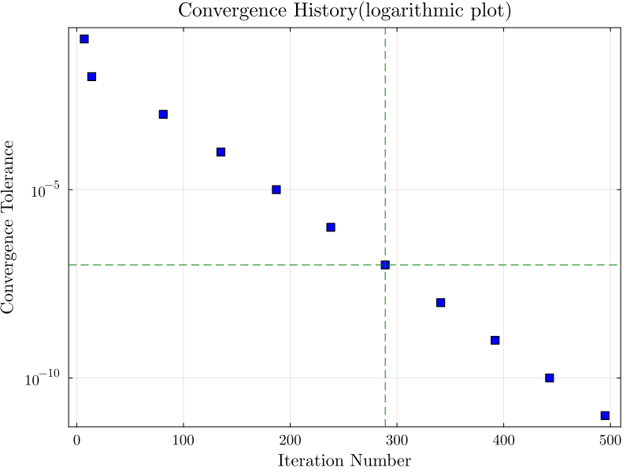

Steady 2D Diffusion
Computational Fluid Dynamics (AM5630) Assignment 2
Table of Contents
1. Steps Followed
1.1. Mesh Geometry
Objective : Define the Mesh Geomety
- STEP 1
- first create a differential 2D Control Volume with
- length along x
- deltax
- length along y
- deltay
- n
- required number of such differential control volumes required to construct full CV
- STEP 2
- Compute the computational nodes for each differential control volume
1.2. Computations
Objectives : COMPUTATIONS
- STEP 1
identify the boundary nodes and apply the boundary conditions
Boundary 1 : T1 = 15 Boundary 2 : T2 = 10 Boundary 3 : T3 = 5(1-y/H) + 15 * sin(pi*y/H)
- STEP 2
- write the equation for boundary 4
- STEP 3
- write the equation for internal nodes
- STEP 4
setup the conditons for tolerance Approach :
- pick n random nodes from grid
- save temperature before each iteration
- find the temperature after iteratrion
- diff = afteriterationtemperature - beforetemperature
- elementwise square each difference diff.2
- max(diff.2) < tolerance
and
prepare the required helper function for computation
- STEP 5
- perform the computations
2. Plots with varying parameter
tolerance is set to 0.00001
- deltax
- length of differential cv in x direction
- deltay
- length of differential cv in y direction
- n
- number of grids
2.1. Plot with n = 10
- deltax
- 1.0
- deltay
- 1.0

2.2. Plot with n = 20
- deltax
- 0.1
- deltay
- 0.1

2.3. n = 30
- deltax
- 0.01
- deltay
- 0.01

- deltax
- 1.0
- deltay
- 1.0

2.4. Plot withn n = 40
- deltax
- 0.01
- deltay
- 0.01

3. Convergence History
This section contain the number of iteration required to achive desired convergence . the data is obtained and convergence history is plotted against logarithmic tolerane value
| Tolerance | Iteration Number |
|---|---|
| 0.1 | 7 |
| 0.01 | 14 |
| 0.001 | 81 |
| 0.0001 | 135 |
| 1e-05 | 187 |
| 1e-06 | 238 |
| 1e-07 | 289 |
| 1e-08 | 341 |
| 1e-09 | 392 |
| 1e-10 | 443 |
| 1e-11 | 495 |
